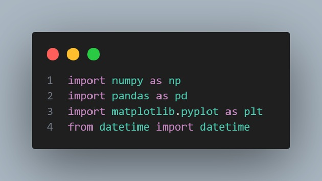
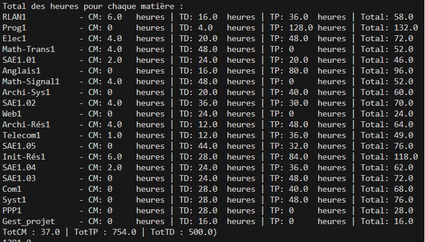

J'ai réalisé ce projet noté seul dans la matière "Situation d'apprentissage et d'évaluation n°15" (SAE15).
L'objectif de ce projet est de noter nos compétences techniques en langage de programmation et plus précisément en "Python" dans une mise en situation fictive.
Nous devions choisir un sujet parmis ceux proposés et suivre une consigne préétablie, voici la consigne :
Importation des bibliothéques.
Fonction permettant de stocker dans un dictionnaire les heures des TP, TD et CM pour chacunes des matières de l'année.
Code pour lire fichier CSV et afficher dans le terminal les heures.
Affichage des heures dans le terminal.
| Nom | Note | Moy |
|---|---|---|
| SAE1.05 : Traiter des données | 13.50 | 11.10 |